分辨率困境：实时视频生成的最后一公里
视频扩散模型在过去两年取得了令人瞩目的进展——从 Stable Video Diffusion 到 Wan2.1，模型能够从文本提示生成逼真的视频。然而，一个核心矛盾始终悬而未决：最强大的视频生成模型只能在低分辨率（480P）下实现实时流式输出，而实际应用（游戏资产生成、实时预览、直播内容创作）需要的是高分辨率 + 低延迟。
现有的自回归流式方法（CausVid、Self Forcing、Causal Forcing）通过非对称蒸馏将双向 DiT 转换为因果逐块生成器，在单 GPU 上实现了 480P 实时。但将这些方法直接扩展到 1K 或 2K 分辨率面临根本性挑战：
直接生成高分辨率
计算成本随分辨率二次增长，480P 到 1K 意味着约 4x 的像素量，注意力复杂度从 $O(n^2)$ 进一步膨胀，在单 GPU 上完全不可行
现有级联方案的缺陷
像素空间 SR 方法（如 FlashVSR）需要修改架构，丧失预训练 T2V 模型的生成先验；潜在空间插值引入频域混叠，迫使 SR 阶段注入大量噪声
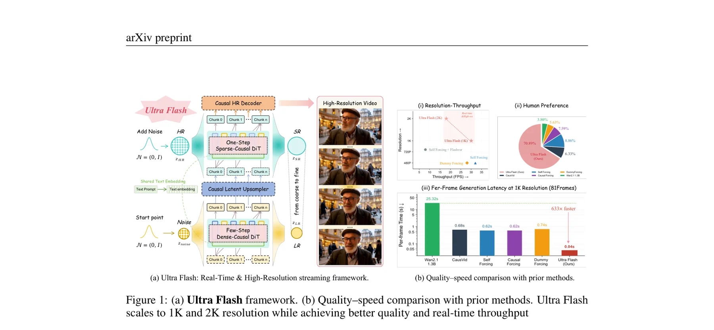
论文的核心突破在于同时推高了分辨率和速度的 Pareto 前沿。现有方法面临一个看似不可调和的权衡：提高分辨率必然增加计算量，压缩计算量必然牺牲质量。Ultra Flash 通过三个正交的设计贡献（架构保持的 SR 训练、因果潜在上采样器、级联流式优化）打破了这一权衡，使得高分辨率实时生成成为可能。
为什么是级联而不是直接生成？
直接生成高分辨率视频的核心瓶颈在于 DiT 的注意力复杂度。对于 960x1664 分辨率的视频，潜在空间的 token 数量远超 480P，导致单帧注意力计算量增长数倍。即使使用稀疏注意力，单步推理的延迟也难以控制在实时范围内。
级联范式的思路是：先生成语义正确的低分辨率视频，再通过超分辨率补充高频细节。这将问题分解为两个子问题——语义生成（由轻量级 LR 生成器负责）和细节恢复（由 SR 模型负责）。关键在于如何让两个阶段无缝协作，不引入质量退化。
SVG 可视化：Ultra Flash 的四级级联流式管线架构，从480P低分辨率到1K/2K高分辨率
架构保持的 T2V-to-TV2V SR 训练范式
Ultra Flash 的第一个核心贡献是：在不修改预训练 T2V 模型架构的前提下，将其转换为 TV2V（Text+Video-to-Video）超分辨率模型。这看似简单的设计选择背后有深刻的工程洞察。
现有像素空间 SR 方法的根本缺陷
FlashVSR 等像素空间 SR 方法需要对预训练模型进行根本性架构修改——添加 LQ 投影层、修改注意力模式等。这些修改有两个致命后果：(1) 丧失预训练 T2V 模型的生成先验，使得训练困难；(2) 在像素空间操作引入额外的编解码开销。
条件机制：零初始化通道扩展
Ultra Flash 的方案极为优雅：将上采样后的低分辨率潜在 $z_{HR}$ 与噪声潜在 $\epsilon$ 在通道维度拼接，得到 $2c$ 通道输入。DiT 的输入投影层从 $c$ 扩展到 $2c$ 通道，新增权重以零初始化，使得训练从原始 T2V 检查点开始。
零初始化保证了训练开始时 SR 模型的行为与原始 T2V 模型完全一致——拼接的 LR 条件通道贡献为零。随着训练推进，模型逐渐学会利用 LR 条件。这是一种渐进式条件注入，避免了突然改变模型行为导致的训练不稳定。类比 LoRA 中零初始化的低秩适配器，这里的零初始化起到了类似的保护作用。
条件增强：噪声注入与 Dropout
为了进一步增强鲁棒性和保持生成能力，训练时应用两种条件增强策略：
条件噪声注入 (Condition Noise Injection)
在拼接前向 LR 条件潜在添加高斯噪声 $\sigma_{cond} \in [0.4, 0.6]$，防止模型过度依赖 LR 条件，鼓励利用学到的生成先验补充缺失细节
条件 Dropout (Condition Dropout)
以概率 $p_{drop}=0.4$ 将 LR 条件完全置零，迫使模型执行纯 T2V 生成。确保 SR 模型保持无条件生成能力，改善 CFG 有效性并防止模式坍塌
AIGC 导向的退化管线
标准的退化模型（如 Real-ESRGAN）针对自然视频设计，不适合 AI 生成内容。AIGC 视频有其独特的伪影模式——时间闪烁、不自然的运动抖动、滚动快门摆动、扩散特有的色彩偏移。Ultra Flash 设计了一个两阶段混合退化管线：
SVG 可视化：Ultra Flash 的两阶段 AIGC 导向退化管线，专为 AI 生成视频的特征伪影设计
传统 SR 退化管线假设输入是自然图像/视频，退化模型是相机噪声 + 压缩。但 AI 生成的视频有完全不同的退化模式：时间维度的不一致（闪烁、抖动）比空间维度的退化更为关键。Stage 1 专门模拟这些时间退化，而 Stage 2 处理传统的空间退化。两阶段级联通过 CutMix 随机混合，产生多样化的训练样本。
class AIGCDegradationPipeline:
"""AIGC-specific temporal + spatial degradation."""
def __call__(self, hr_video: Tensor) -> Tensor:
# Stage 1: AIGC synthetic temporal degradation
x = self.temporal_morphing(hr_video, alpha_range=(0.2, 0.9))
x = self.stochastic_frame_drop(x, p_drop=0.15, max_consecutive=2)
x = self.directional_motion_blur(x) # smooth angle/length trajectories
x = self.roi_grid_warp(x, max_disp=14) # rolling-shutter wobble
x = self.h264_compress(x, crf_range=(25, 30))
# Stage 2: Real-ESRGAN-style spatial degradation (2-pass)
for _ in range(2):
x = self.usm_sharpen(x)
x = self.gaussian_blur(x, kernel=(15, 37), sigma=(0.2, 3.0))
x = self.random_rescale(x, factor=(0.15, 1.5))
x = self.add_noise(x)
x = self.jpeg_compress(x, quality=(70, 95))
# Simulate spatial resolution gap
x = self.bicubic_down_up(x, scale_range=(2, 4))
# Stochastic CutMix between branches
if random.random() < self.p_mix:
x = self.cutmix(aigc_degraded, spatial_degraded)
return x因果流式潜在上采样器与高分辨率解码器
在级联高分辨率生成中，上采样阶段是连接 LR 潜在和 SR 模型的桥梁。现有方案要么使用朴素插值（引入频域混叠，迫使 SR 注入大量噪声），要么依赖大型上采样模型（排除流式推理）。Ultra Flash 提出了一种统一的因果记忆网络架构，同时作为流式潜在上采样器和高分辨率解码器。
核心构建块：CausalMemBlock
因果记忆网络的核心是 CausalMemBlock，它将当前帧的特征与前一帧的记忆融合：
其中 $[\cdot;\cdot]$ 表示通道拼接，$m_{t-1}^{(\ell)}$ 是前一帧的特征作为时间记忆，$\sigma$ 是 ReLU 激活，$W_{skip}$ 是 $1\times1$ 残差投影。因果结构确保每帧仅依赖于过去的上下文，实现逐帧流式推理。
SVG 可视化：CausalMemBlock 的内部结构，通过因果记忆实现逐帧流式推理
空间上采样：PixelShuffle
每个阶段内的空间上采样通过 PixelShuffle 实现：$3\times3$ 卷积将通道维度扩展 $r^2$ 倍，然后通过子像素重排将通道转换为空间分辨率（每阶段因子为 1x 或 2x 或 3x）。时间上采样通过 $1\times1$ 卷积和通道到时间的 reshape 实现。
关键设计选择是在潜空间而非像素空间进行上采样。这有两个重大优势：(1) 潜空间分辨率远低于像素空间（通常 8x 下采样），计算量极小；(2) 避免了像素空间编解码的额外开销。但挑战在于潜在空间对时空一致性敏感——朴素插值会引入频率混叠。因果记忆网络通过学习时空一致性上采样解决了这个问题，仅增加 \lt 5% 的管线成本。
训练目标
其中光流 warp 损失鼓励时空平滑输出，直接降低下游 SR 模型所需的噪声水平。这一步看似简单，却是整个管线的关键——如果上采样器输出不一致，SR 模型就需要更强的去噪能力来补偿，导致训练和蒸馏更加困难。
级联高分辨率流式生成优化
Multi-step SR 模型虽然质量高，但依赖密集双向注意力和迭代去噪，离实时相距甚远。Ultra Flash 设计了一个两阶段优化方案，逐步将其转换为实时流式模型。
Phase I: 混合奖励增强的稀疏因果化与单步蒸馏
这一阶段同时解决两个正交的瓶颈：密集双向注意力排除流式推理，多步去噪主导延迟。
SVG 可视化：从密集注意力到动态块稀疏因果注意力的转换，使 1K 分辨率流式推理成为可能
动态块稀疏因果注意力
3D token 网格 $(t, h, w)$ 被划分为不重叠的块 $(b_t, b_h, b_w)$。对每个注意力层，计算两级掩码：(1) 结构掩码——空间局部性掩码 $M_{local}$ 限定感受野为 $r \times r$ 滑动窗口，时间因果掩码 $M_{causal}$ 确保仅关注当前和先前的 chunk；(2) 内容自适应 top-k 选择——对 Q 和 K 进行块级池化，保留每个头最相关的 top-k 块。
解耦 DMD 单步蒸馏
采用 Decoupled DMD 将多步去噪压缩为单次前向传播。蒸馏涉及三个模型：
Real Score Model (Teacher)
多步双向 SR 模型 + CFG，冻结参数。提供真实的去噪信号
Fake Score Model
从教师权重初始化，在学生生成的样本上训练，追踪演化中的生成器分布。更新频率为生成器的 5 倍
Generator (Student)
转换为因果稀疏注意力，是主要的可训练组件。接收 CA（CFG增强）和 DM（分布匹配）两个梯度信号
混合奖励集成
在蒸馏过程中融入感知和美学奖励信号，直接优化视觉质量：
三个奖励指标从不同维度约束生成质量：CLIP-IQA+ 捕获感知质量（语义正确性），MUSIQ 评估多尺度图像质量（局部细节+全局协调），LAION-Aesthetic 评估美学吸引力（构图、色彩和谐）。它们的梯度通过 HR 解码器 $D_{HR}$ 反向传播到学生模型，提供了分布匹配（Decoupled DMD）和像素重建（小波 L1 + LPIPS）无法覆盖的互补信号。
Phase II: 级联流式自强迫偏好优化
Phase I 产生单步因果 SR 模型，但仍基于 GT 低分辨率上下文训练。推理时必须处理不完美的上游输出——这是级联设定特有的复合暴露偏差。
高分辨率自强迫 Rollout
训练时模拟实际推理分布：LR 流式生成器自回归产生上下文 chunk，经潜在上采样器后输入 SR 模型。SR 输出反过来作为后续 chunk 的上下文，使模型同时暴露于自身不完美和上游错误。
偏好优化 (DPO)
其中负样本 $z^-$ 来自当前级联管线的流式推理，正样本 $z^+$ 来自更强的 Wan2.2-5B SR 模型的多步像素空间超分，作为 oracle 参考。
动态缓存管理
LR 去噪步数缩减
首个 chunk 使用完整 4 步，后续 chunk 减少为 3 步。下游 SR 补偿细节，节省每个 chunk 一次前向传播
自适应缓存刷新
使用轻量 IQA 指标评估前一 chunk：若分数超阈值则直接复用 KV 缓存，消除额外前向传播
SR 缓存长度自适应
单步 SR 对强条件信号使得质量对 KV 缓存长度不敏感，动态选择紧凑缓存窗口
Phase II 的 DPO 使用 Wan2.2-5B（5B 参数，多步像素空间 SR）作为正样本的 oracle。这与 Phase I 的 Decoupled DMD 形成了层级化的知识蒸馏：Phase I 从多步教师压缩到单步，Phase II 用更强的模型引导偏好方向。这种设计巧妙地将分辨率提升引入的质量退化通过偏好学习来补偿，而非依赖更强的模型本身。
def cascaded_streaming_inference(lr_generator, upsampler, sr_model, hr_decoder, text_embed):
"""Real-time cascaded streaming inference."""
kv_cache_lr, kv_cache_sr = None, None
for chunk_idx, lr_chunk in enumerate(lr_generator.stream()):
# Step 1: LR generation with adaptive step count
n_steps = 4 if chunk_idx == 0 else 3 # step reduction for subsequent chunks
lr_latent = lr_generator.denoise(lr_chunk, steps=n_steps, kv_cache=kv_cache_lr)
# Step 2: Adaptive cache refresh
if chunk_idx > 0 and iqa_score(prev_decoded) > IQA_THRESHOLD:
kv_cache_lr = reuse_last_kv_cache() # skip x0 forward pass
else:
kv_cache_lr = update_kv_cache(lr_latent)
# Step 3: Causal latent upsampling (< 5% overhead)
hr_latent = upsampler.upsample(lr_latent) # 2x spatial in latent space
# Step 4: Single-step SR with sparse causal attention
sr_latent = sr_model.one_step_denoise(hr_latent, text_embed, kv_cache=kv_cache_sr)
kv_cache_sr = sr_model.update_cache(sr_latent, window_size=adaptive_window())
# Step 5: Causal HR decode (8x8x4 spatiotemporal)
hr_pixels = hr_decoder.decode(sr_latent)
yield hr_pixels实验结果：全面超越的实时高分辨率生成
Ultra Flash 基于 Wan2.1-T2V-1.3B 构建，在单 H200/B200 GPU 上进行了全面评估。
质量对比：VBench 全面领先
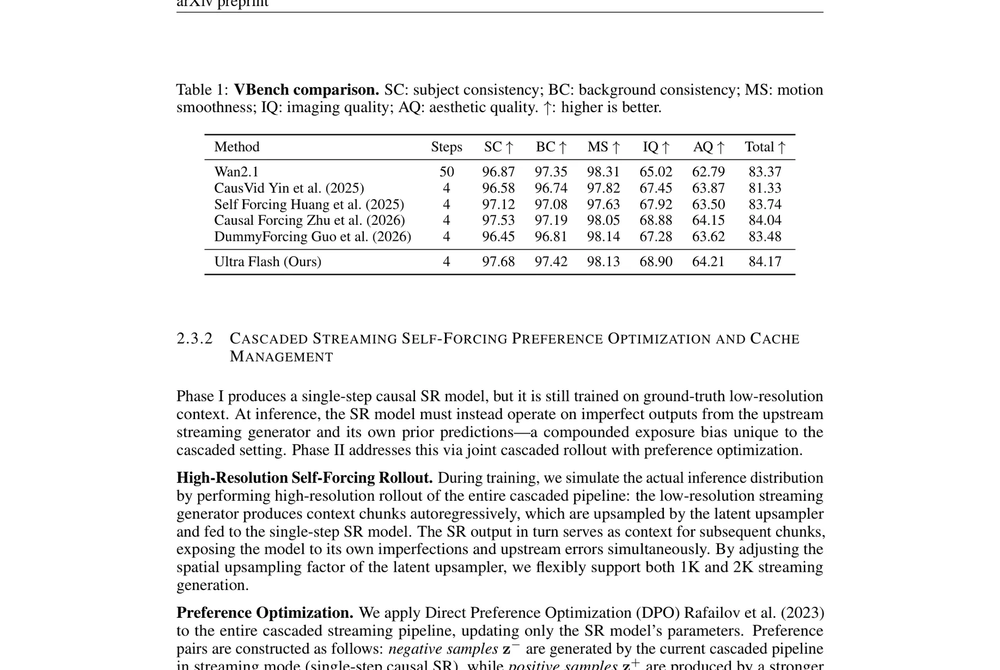
| Method | Steps | SC | BC | MS | IQ | AQ | Total |
|---|---|---|---|---|---|---|---|
| Wan2.1 (teacher) | 50 | 96.87 | 97.35 | 98.31 | 65.02 | 62.79 | 83.37 |
| CausVid | 4 | 96.58 | 96.74 | 97.82 | 67.45 | 63.87 | 81.33 |
| Self Forcing | 4 | 97.12 | 97.08 | 97.63 | 67.92 | 63.50 | 83.74 |
| Causal Forcing | 4 | 97.53 | 97.19 | 98.05 | 68.88 | 64.15 | 84.04 |
| DummyForcing | 4 | 96.45 | 96.81 | 98.14 | 67.28 | 63.62 | 83.48 |
| Ultra Flash (Ours) | 4 | 97.68 | 97.42 | 98.13 | 68.90 | 64.21 | 84.17 |
Ultra Flash 的总分（84.17）超越了 50 步的 Wan2.1 教师（83.37）。这证明了混合奖励集成（CLIP-IQA+、MUSIQ、LAION-Aesthetic）和偏好优化的有效性——它们不仅弥补了多步到单步的质量损失，还通过直接优化感知指标实现了对教师的超越。这种"学生超越教师"的现象在蒸馏文献中相对罕见。
效率对比：单 GPU 实现实时
SVG 可视化：分辨率-吞吐量 Pareto 前沿。Ultra Flash 显著推高了高分辨率实时生成的 Pareto 边界
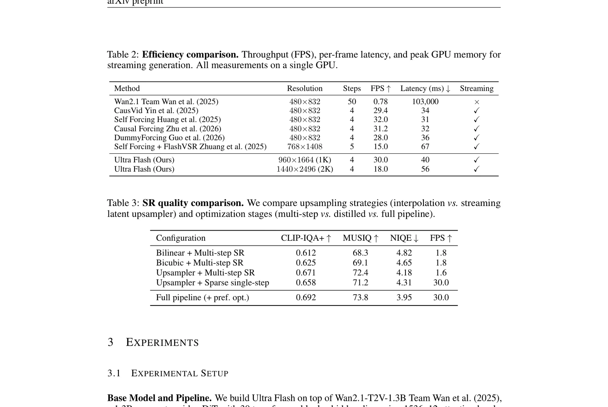
| Method | Resolution | Steps | FPS | Latency (ms) | Streaming |
|---|---|---|---|---|---|
| Wan2.1 | 480x832 | 50 | 0.78 | 103,000 | -- |
| CausVid | 480x832 | 4 | 29.4 | 34 | Yes |
| Self Forcing | 480x832 | 4 | 32.0 | 31 | Yes |
| Self Forcing + FlashVSR | 768x1408 | 5 | 15.0 | 67 | Yes |
| Ultra Flash (Ours) | 960x1664 (1K) | 4 | 30.0 | 40 | Yes |
| Ultra Flash (Ours) | 1440x2496 (2K) | 4 | 18.0 | 56 | Yes |
相比原生 Wan2.1 的 103 秒/帧延迟，Ultra Flash 仅需 ~33ms/帧（30 FPS），实现了 633 倍的加速。更重要的是，这个加速不是在 480P 基础上实现的，而是在更高的 1K 分辨率下。这意味着 Ultra Flash 不仅解决了实时性问题，还同时解决了分辨率问题——两个维度的同时突破是此前任何方法都未能实现的。
定性比较：细节与一致性
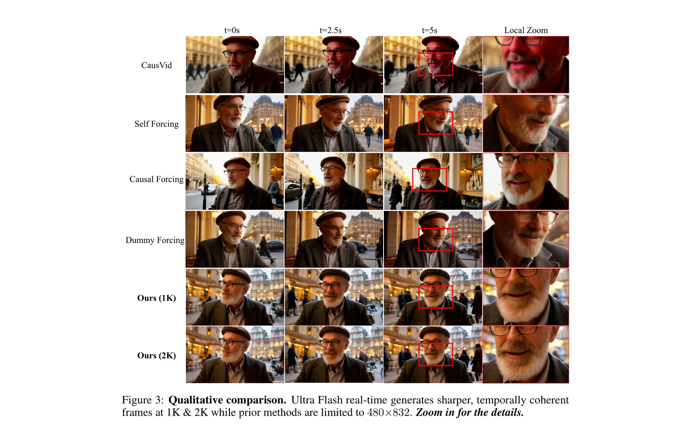
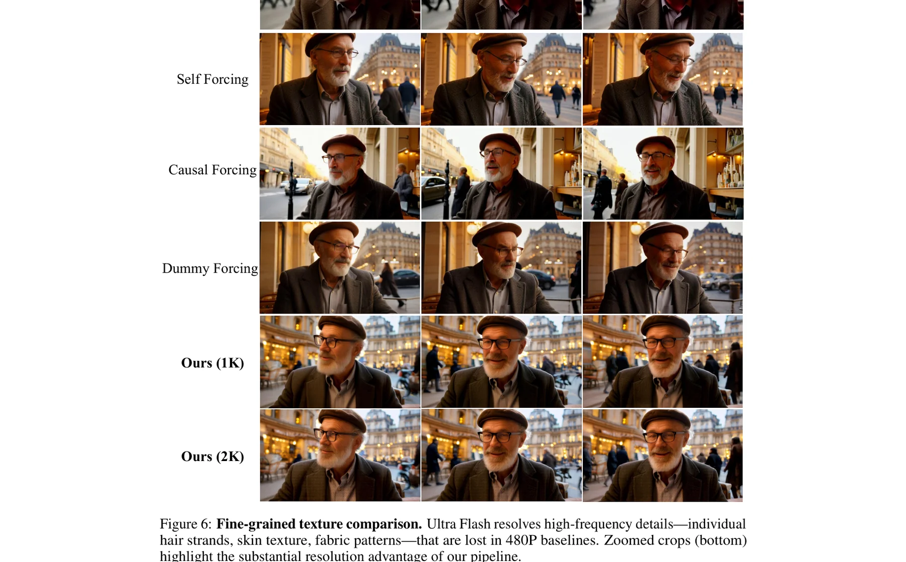
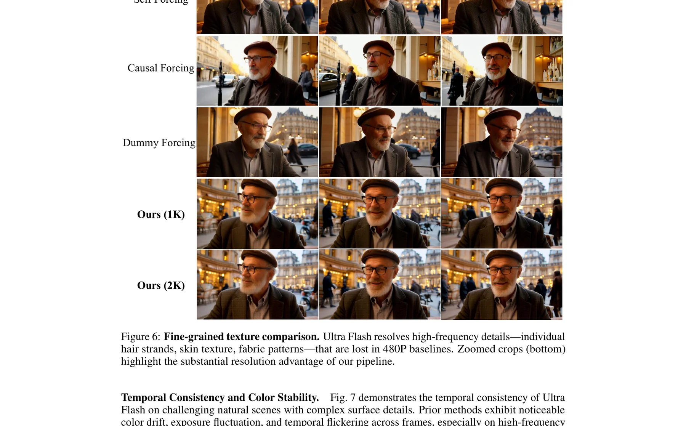
VBench 16 维度雷达图
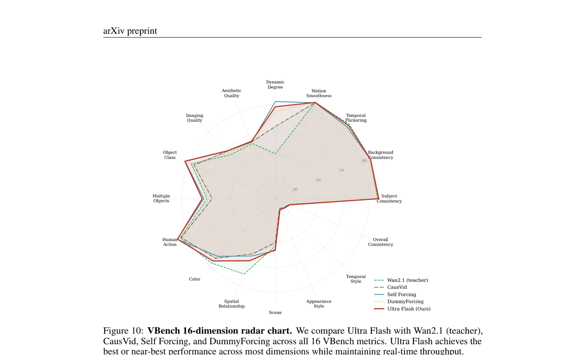
消融研究
SR 训练组件消融
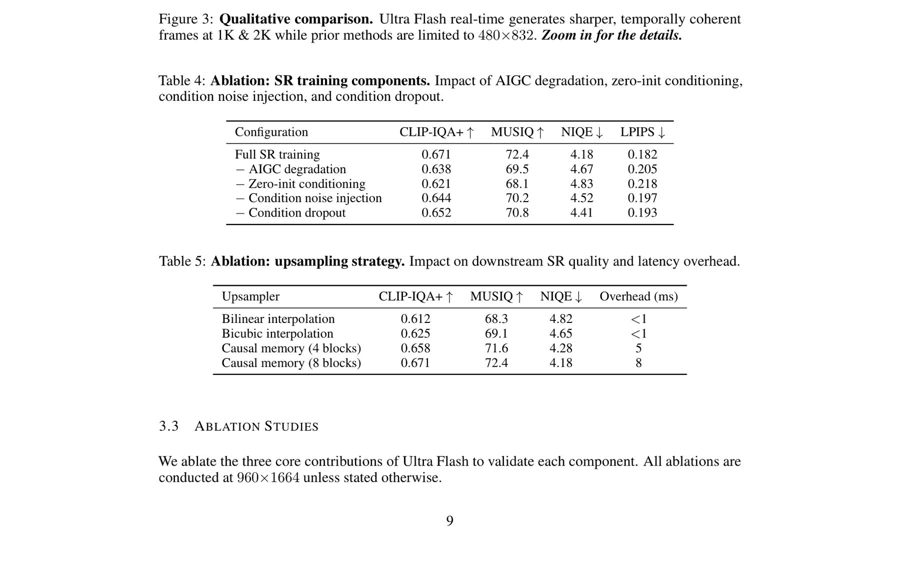
关键发现：移除零初始化条件（替换为随机初始化）对质量影响最大——CLIP-IQA+ 从 0.671 降至 0.621。这验证了零初始化在保持预训练生成先验方面的关键作用。移除 AIGC 退化管线同样造成显著质量下降（降至 0.638），证实了针对 AIGC 特征退化的定制化设计的必要性。
上采样策略消融
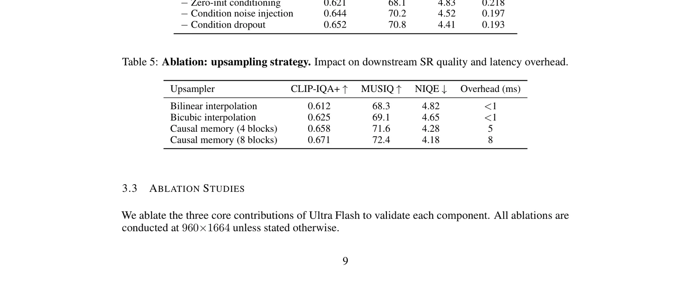
级联流式优化组件消融
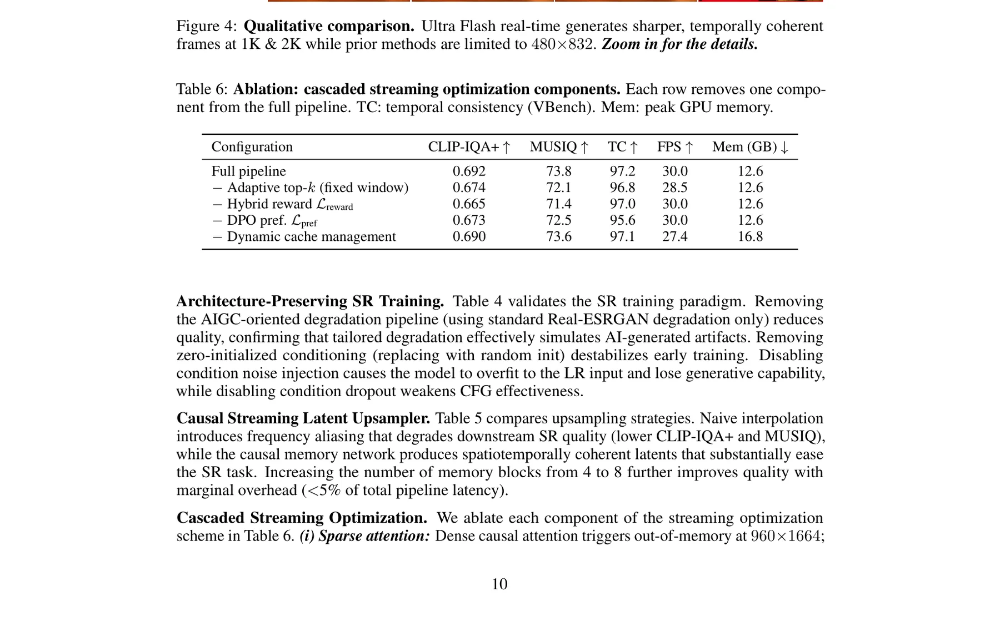
消融数据显示，DPO 偏好优化对时间一致性（TC）的贡献最为突出——移除 DPO 后 TC 从 97.2 降至 95.6，下降 1.6 个百分点。这远大于对 CLIP-IQA+（0.019）和 MUSIQ（1.3）的影响。这表明 DPO 的主要作用不是提升单帧质量，而是纠正级联管线中逐帧累积的时间不一致——这正是其设计目标。
训练成本
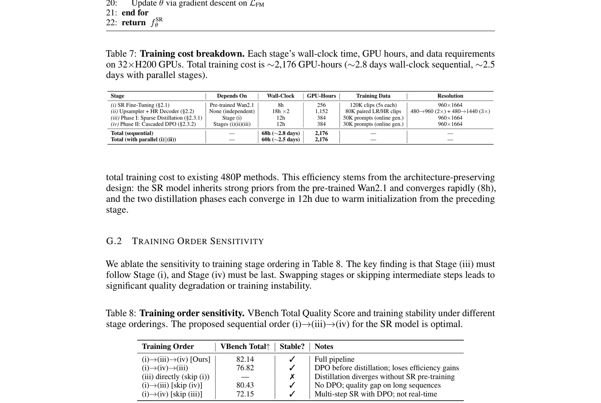
值得注意的是，CausVid 报告约 3,000 A100 GPU 小时用于 480P 蒸馏，Self Forcing 报告约 2,400 GPU 小时。Ultra Flash 的 2,176 GPU 小时实现了 4 倍分辨率提升（从 480P 到 1K/2K），训练成本反而更低。
核心代码实现：可复现的关键模块
本章提供 Ultra Flash 核心模块的高保真参考实现，帮助研究者理解和复现关键设计。
CausalMemBlock 实现
class CausalMemBlock(nn.Module):
"""Causal memory block: fuses current frame with previous frame memory."""
def __init__(self, channels: int):
super().__init__()
self.conv1 = nn.Conv2d(channels * 2, channels, 3, padding=1) # concat input
self.conv2 = nn.Conv2d(channels, channels, 3, padding=1)
self.conv3 = nn.Conv2d(channels, channels, 3, padding=1)
self.skip_proj = nn.Conv2d(channels, channels, 1) # residual 1x1
self.act = nn.ReLU(inplace=True)
def forward(self, h_t: Tensor, m_prev: Tensor) -> Tensor:
"""
Args:
h_t: current frame features [B, C, H, W]
m_prev: previous frame memory [B, C, H, W]
Returns:
h_out: updated features [B, C, H, W]
"""
# Concatenate current + memory along channel dim
x = torch.cat([h_t, m_prev], dim=1) # [B, 2C, H, W]
# Three conv layers with activations
x = self.act(self.conv1(x)) # [B, C, H, W]
x = self.act(self.conv2(x)) # [B, C, H, W]
x = self.conv3(x) # [B, C, H, W]
# Skip connection from input
return x + self.skip_proj(h_t)动态块稀疏注意力掩码
def compute_sparse_mask(Q, K, block_size, local_window, topk_ratio, causal=True):
"""
Compute content-adaptive block-sparse causal attention mask.
Args:
Q, K: query/key tensors [B, H, N, D]
block_size: (bt, bh, bw) for 3D token grid
local_window: spatial locality window size r
topk_ratio: fraction of blocks to keep per head
causal: if True, apply temporal causal masking
"""
B, H, N, D = Q.shape
# Pool Q, K to block level
Q_blk = pool_to_blocks(Q, block_size) # [B, H, Nb, D]
K_blk = pool_to_blocks(K, block_size) # [B, H, Nb, D]
# Block-level attention scores
scores = torch.matmul(Q_blk, K_blk.transpose(-1, -2)) / math.sqrt(D)
# Structural masks
M_local = build_local_mask(N, block_size, local_window) # spatial locality
M_causal = build_causal_mask(N, block_size) if causal else None
# Content-adaptive top-k selection
k = max(1, int(N * topk_ratio))
topk_mask = scores >= scores.topk(k, dim=-1).values[..., -1:]
# Combine masks
mask = topk_mask & M_local
if M_causal is not None:
mask = mask & M_causal
return mask级联推理管线
class UltraFlashPipeline:
"""Complete cascaded streaming pipeline for HR video generation."""
def __init__(self, config):
self.lr_generator = SelfForcing(config.lr_model) # 480P streaming
self.upsampler = CausalLatentUpsampler(config) # 2.1M params
self.sr_model = SparseCausalDiT(config.sr_model) # 1.3B, one-step
self.hr_decoder = CausalHRDecoder(config) # 8x decode
# Dynamic cache management params
self.iqa_threshold = config.iqa_threshold
self.adaptive_window_fn = config.cache_window_fn
@torch.no_grad()
def generate(self, prompt: str, n_chunks: int = 10):
text_embed = self.encode_text(prompt)
for i in range(n_chunks):
# LR generation (4 steps first chunk, 3 steps after)
lr_latent = self.lr_generator(
text_embed, steps=4 if i == 0 else 3
)
# IQA-adaptive cache refresh
if i > 0 and self._iqa_ok(prev_hr):
self.lr_generator.reuse_kv_cache()
# Causal latent upsampling (2x spatial, ~5% overhead)
hr_latent = self.upsampler(lr_latent)
# Single-step SR with sparse causal attention
sr_latent = self.sr_model.one_step(
hr_latent, text_embed,
cache_window=self.adaptive_window_fn(lr_latent)
)
# Causal HR decode (8x8x4 spatiotemporal)
prev_hr = self.hr_decoder(sr_latent)
yield prev_hr # [B, T, 3, H, W] at target resolution观察推理管线，几个设计选择值得注意：(1) LR 步数动态调整——首个 chunk 使用 4 步确保上下文质量，后续 chunk 减为 3 步因为 SR 会补偿细节；(2) 缓存复用的条件判断——基于 IQA 分数而非固定的刷新间隔，使得在高质量内容段节省计算；(3) SR 的单步约束——这是整个管线实时性的关键，所有其他优化都围绕这个约束展开。
开放科研问题
基于对 Ultra Flash 的深入分析，以下五个问题值得进一步探索：
因果记忆网络的容量瓶颈在哪里？
当前上采样器仅 2.1M 参数（8 个 CausalMemBlock），在 2x 空间上采样时表现良好，但如果需要 4x 甚至 8x 上采样（例如从 240P 到 1K），当前架构是否仍有足够的表达能力？记忆网络的"记忆容量"——即能够保持时空一致性的最大上下文长度——是否有理论上的上界？这是否可以通过增加块深度来线性扩展？
AIGC 退化管线能否泛化到新的生成模型架构？
Ultra Flash 的退化管线是针对 Wan2.1 的特征伪影设计的。随着视频生成模型的架构快速演进（如从 DiT 到 MMDiT、从 flow matching 到 consistency models），新一代模型可能产生完全不同的伪影模式。能否设计一个自适应退化管线，通过从目标模型的输出中学习退化特征，自动调整退化参数？
DPO 偏好优化的正样本质量上限在哪里？
Phase II 使用 Wan2.2-5B 作为 oracle 生成正样本。但 DPO 的效果理论上受限于正样本质量——如果正样本本身就有缺陷，DPO 可能将生成器引导到次优方向。是否可以使用在线搜索（如 MCTS 或 best-of-N 采样）动态生成更高质量的正样本？或者使用多模型集成作为更强的 oracle？
稀疏注意力的自适应 top-k 选择能否学习？
当前的 top-k 选择基于块级注意力分数的静态阈值。能否训练一个轻量级路由器网络，根据输入内容动态预测每个头应该关注哪些块？这类似于 Mixture-of-Experts 中的门控机制，但应用于注意力掩码。是否能在不增加推理延迟的情况下实现更优的稀疏模式？
级联管线的误差累积如何量化和控制？
Ultra Flash 的四级级联管线中，每个阶段的误差都会传递到下游。论文通过 Phase II DPO 缓解了暴露偏差，但误差累积的定量分析仍然缺失。每个阶段对最终质量的贡献比例是多少？能否设计一个误差传播图来指导每个阶段的优化优先级？如果训练预算有限，应该优先优化哪个阶段？
Ultra Flash 的成功揭示了一个更广泛的方法论模式：面对单一模型无法解决的复杂问题（实时 + 高分辨率），级联管线是一种有效的系统化解决方案。但级联不是简单的串联——每个阶段的设计都必须考虑下游的需求。上采样器的时空一致性减少了 SR 的噪声需求，SR 的单步约束决定了蒸馏方案，偏好优化弥补了级联的暴露偏差。这种"全局思维、局部优化"的工程哲学值得其他级联系统借鉴。